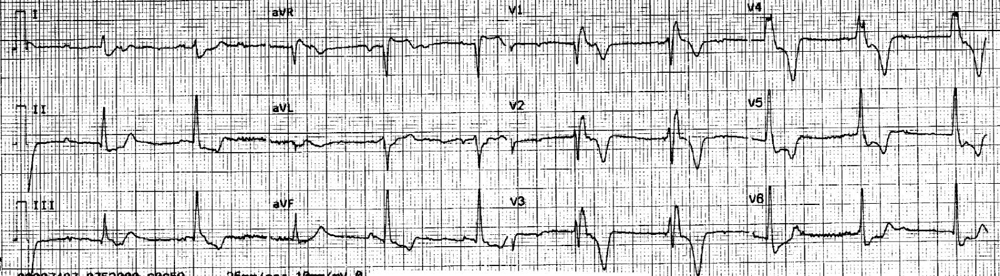
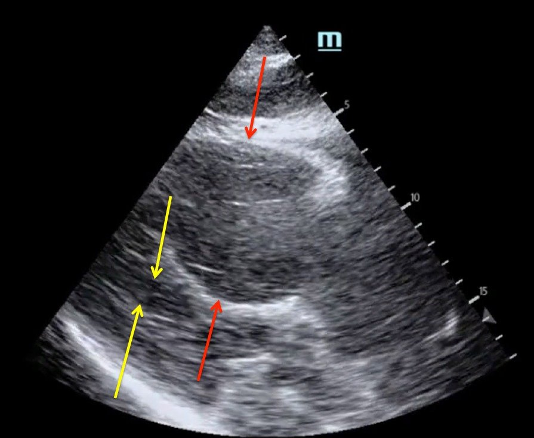
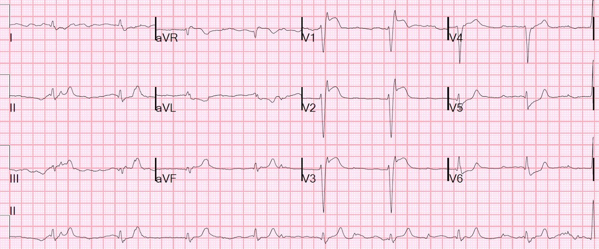
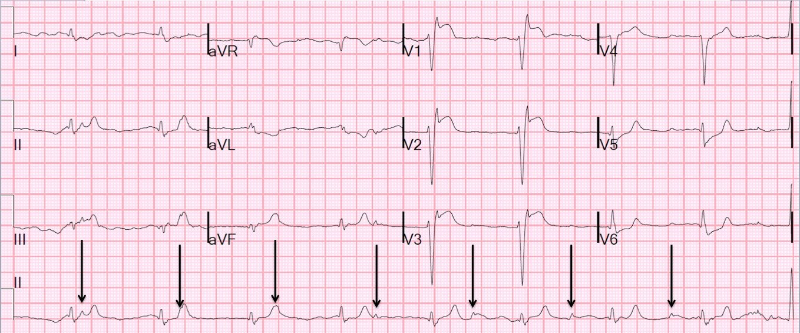
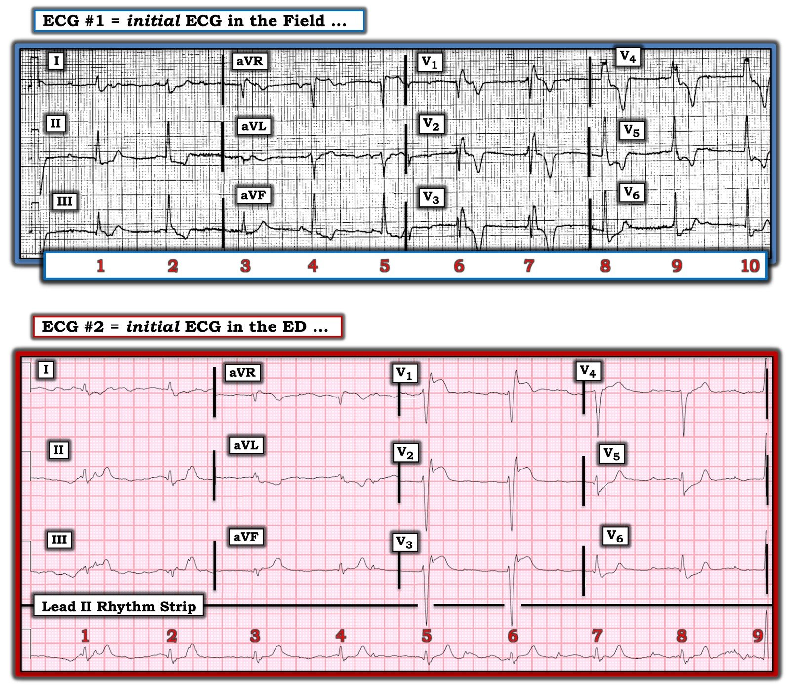
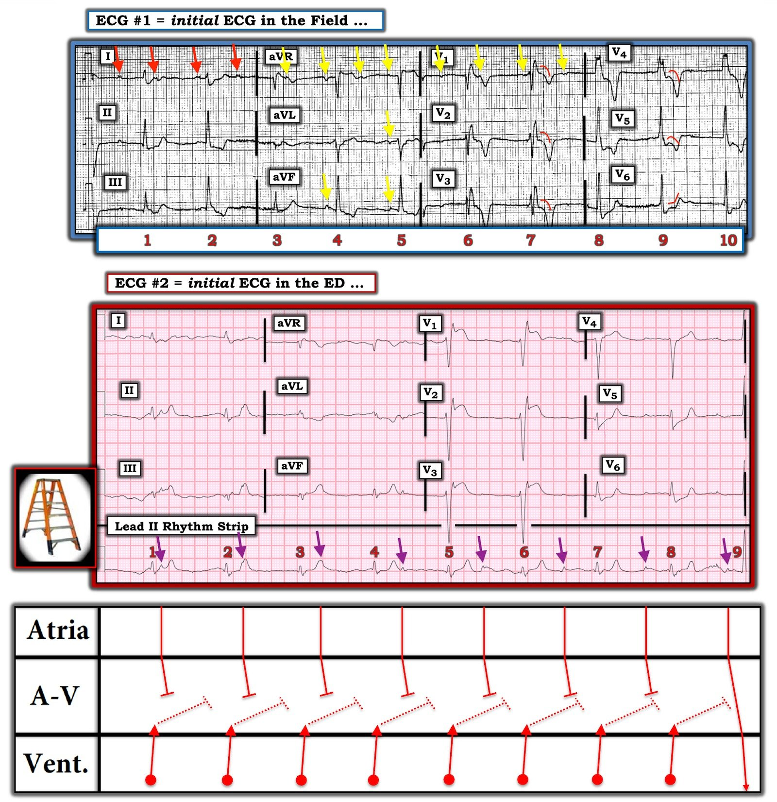

24/09/2020 — Đăng lại: Ngất, sốc, blốc AV, RBBB, thất phải lớn, ST chênh lên “thành trước” ở V1-V3
Bản dịch tiếng Việt của bài "Repost: Syncope, Shock, AV block, RBBB, Large RV, “Anterior” ST Elevation in V1-V3" – Dr. Smith’s ECG Blog. Giữ nguyên toàn bộ 8 hình ảnh và 4 video của bản gốc.
Tôi tình cờ thấy bài viết này từ năm 2015 khi đang trả lời một câu hỏi trên Twitter, và quyết định đăng lại:
https://drsmithsecgblog.com/2015/12/syncope-shock-av-block-large-rv.html (bài gốc: Ngất, sốc, blốc AV, thất phải lớn)
Ngất, sốc, blốc AV, RBBB, thất phải lớn, ST chênh lên “thành trước” ở V1-V3
Một bệnh nhân nam cao tuổi bị một cơn ngất. Số 911 đã được gọi. Khi nhân viên cấp cứu ngoài viện đến, bệnh nhân tỉnh táo và làm theo được y lệnh. Ngay trước mặt nhân viên cấp cứu, ông mất ý thức, ngừng thở và được ép ngực trong 30 giây, sau đó ông bắt đầu rên rỉ và lại có thể giao tiếp và làm theo y lệnh. Không có cú sốc điện nào được thực hiện.
Một điện tâm đồ 12 chuyển đạo đã được ghi:


Có ST chênh xuống kéo dài sau điểm kết thúc của QRS rộng ở I, II, aVF và V4-V6, có giá trị chẩn đoán thiếu máu cục bộ dưới nội tâm mạc. Không có ST chênh lên.
Khi đến khoa cấp cứu (ED), bệnh nhân đang rên rỉ, trông xám tái và thở ngáp (agonal). Ông không đáp ứng với kích thích đau.
Ông đang trong tình trạng sốc nặng.
Ông được đặt nội khí quản.
Một siêu âm tim tại giường đã được ghi lại:
Nếu video này không chạy, bạn có thể xem tại đây: https://vimeo.com/148133345
Đây là một ảnh tĩnh của siêu âm tim:


Bạn nghĩ gì?
Không có dịch màng ngoài tim để giải thích tình trạng sốc. Thất phải (RV) rất lớn. Điều này về cơ bản loại trừ giảm thể tích tuần hoàn là nguyên nhân (không có xuất huyết tiêu hóa, không có vỡ phình động mạch chủ bụng, v.v.). Nó khiến thuyên tắc phổi (PE) trở nên rất có khả năng. Nó cũng khiến nhồi máu thất phải diện rộng là điều có thể, nhưng ít khả năng hơn nhiều so với PE. Thất trái (LV) nhỏ hàm ý áp lực đổ đầy thất trái rất thấp, điều này hàm ý áp lực tĩnh mạch phổi thấp. Áp lực thất phải có vẻ cao (thất phải lớn), vì vậy có sự tắc nghẽn giữa thất phải và thất trái (PE).
Một khả năng khác là thất phải thiếu máu cục bộ đến mức không thể tạo ra áp lực cao (nhồi máu thất phải – RVMI). Khả năng này thấp hơn nhiều so với PE.
Cùng với các biện pháp hỗ trợ, điện tâm đồ đầu tiên tại khoa cấp cứu này đã được ghi:




Có ST chênh lên do thiếu máu cục bộ rõ ràng ở V1-V3, tối đa ở V1.
Có sóng T hơi lớn ở các chuyển đạo dưới, kèm ST chênh xuống ở aVL
Chuyện gì đang xảy ra?
Thứ nhất, đây là loại ngừng tim gì? Đó là ngừng tim kiểu PEA hoặc nhịp chậm–vô tâm thu, không phải nhịp sốc được. Có blốc tim độ 3. Mặc dù phần lớn các ca ngừng tim do nhồi máu cơ tim là do rung thất, một số là do blốc AV mức độ cao, và vì vậy ca này thực sự có thể là do một STEMI cấp diện rộng.
Thứ hai: siêu âm cho chúng ta biết gì về tình trạng này? Đây có phải là nhồi máu cơ tim thành trước (thất trái) không? Không! –Thất phải lớn và thất trái nhỏ trên siêu âm cho thấy đây là một quá trình bệnh lý ở thất phải. Một nhồi máu cơ tim thành trước điển hình sẽ có thất trái lớn với chức năng kém, chứ không phải thất trái nhỏ. Thất trái này không được đổ đầy.
Thứ ba: điện tâm đồ cho chúng ta biết gì về thất trái? ST chênh lên ở thành trước, nhưng đó là thành trước thất trái hay thành trước thất phải???? STEMI thành trước thất trái không cho ST chênh lên tối đa ở V1. Vì vậy điện tâm đồ này điển hình cho STEMI thất phải (RV).
Thứ tư: STEMI thất phải hầu như luôn đi kèm STEMI thành dưới rõ rệt. Mặc dù có một vài bằng chứng về điều này ở các chuyển đạo dưới, nó không thuyết phục.
Do đó, siêu âm trông giống PE, và vị trí ST chênh lên cho chúng ta biết đây là STEMI thất phải (biểu hiện ở các chuyển đạo “trước”, vì chúng nằm trên thành trước thất phải). Nhưng nó không cho chúng ta biết STEMI thất phải này là do nhồi máu cơ tim típ 1 (nứt vỡ mảng xơ vữa kèm huyết khối) hay do nhồi máu cơ tim típ 2 (hạ huyết áp nặng và áp lực thất phải tăng ngăn cản tưới máu thất phải)
Thứ năm: siêu âm trong nhồi máu thất phải có thể trông y hệt như trong PE: có thể có cả dấu hiệu McConnell lẫn dấu hiệu chữ “D”, cũng như thất phải giãn lớn với chức năng kém.
Thứ sáu: Sốc nặng (ví dụ do PE) có thể dẫn đến STEMI (và, nếu ở thành trước, nó có thể do thiếu máu cục bộ thành trước thất trái hoặc thành trước thất phải, hoặc cả hai) vì áp lực và dòng chảy mạch vành thấp, đơn giản chỉ do sốc. Ở đây chúng ta có bằng chứng về rối loạn chức năng thất phải nặng nề.
Thứ bảy: Khi tình trạng sốc nặng – nguyên nhân của STEMI – là do PE, ST chênh lên nhiều khả năng phản ánh thất phải, vì có cả hai điều: 1) dòng chảy mạch vành rất thấp ở nhánh bờ thất phải (do CẢ huyết áp thấp VÀ áp lực thất phải cao), và nhu cầu oxy cao (thể tích tăng làm tăng sức căng thành và tăng nhu cầu oxy) dẫn đến cung rất thấp và cầu cao, từ đó dẫn đến thiếu máu cục bộ dưới thượng tâm mạc và ST chênh lên.
Thứ tám: STEMI, ngay cả khi do dòng chảy thấp chứ không phải do ACS, có thể gây thiếu máu cục bộ hệ thống dẫn truyền và dẫn đến blốc AV hoàn toàn, thậm chí blốc AV dưới His (infra-HIS).
Thứ chín: Nhồi máu cơ tim típ II có thể bị làm nặng thêm bởi các chỗ hẹp mạch vành cố định. Có thể có một chỗ hẹp ở RCA đoạn gần, nhưng chỗ hẹp đó không nhất thiết phải có huyết khối thì tình huống này mới gây thiếu máu cục bộ cực độ. Thậm chí không nhất thiết phải có chỗ hẹp nào cả.
Tất cả những điều này nghiêng về PE kèm STEMI thất phải hệ quả, nhưng khởi phát bởi PE.
Tóm tắt:
1. Nếu đây là một nhịp sốc được, STEMI sẽ là khả năng cao nhất. Nhưng đây là nhịp chậm–vô tâm thu, nên thuyên tắc phổi phải được đặt cao trong chẩn đoán phân biệt.
2. Siêu âm tim cho thấy rằng, nếu đây là nhồi máu cơ tim, thì nhiều khả năng nhất là nhồi máu thất phải. Đây không phải là nhồi máu cơ tim thành trước (thất trái).
3. Điện tâm đồ cũng cho thấy nhồi máu thất phải, không phải nhồi máu thành trước thất trái
4. Vậy đây có phải là nhồi máu thất phải đơn độc kèm sốc không? Có thể, nhưng thuyên tắc phổi rất lớn thì nhiều khả năng hơn.
Ở một bệnh nhân có chẩn đoán phân biệt như vậy, và đang sốc nặng, cận tử, điều trị là thuốc tiêu sợi huyết tĩnh mạch. Có thể tiêm bolus 1/2 liều (50mg) của liều đầy đủ (100 mg) khi bệnh nhân đang trong tình trạng nguy kịch như bệnh nhân này.
STEMI thất phải đơn độc như vậy hiếm gặp, nhưng thuyên tắc phổi thì không. Do đó, đây nhiều khả năng nhất là thuyên tắc phổi, không phải STEMI. Tuy nhiên, thuốc tiêu sợi huyết sẽ điều trị được cả hai.
Thuốc tiêu sợi huyết rất hiệu quả ở giai đoạn sớm của STEMI.
Hơn nữa, việc dùng thuốc tiêu sợi huyết không loại trừ việc chụp mạch vành và PCI sau đó nếu hóa ra đây là STEMI thất phải.
Diễn biến lâm sàng
Các bác sĩ lâm sàng nghĩ đây là STEMI thất trái do ST chênh lên ở “thành trước”. Phòng thông tim đã được kích hoạt. Tại phòng thông tim, các động mạch vành không có tổn thương. Thuyên tắc phổi được nghi ngờ, và thông tim phải kèm chụp động mạch phổi đã xác nhận điều đó.
Đây là động mạch phổi trái
Nếu video này không chạy, bạn có thể xem tại đây: https://vimeo.com/149178077
Có huyết khối lan rộng trong động mạch phổi chính
Đây là động mạch phổi phải
Nếu video này không chạy, bạn có thể xem tại đây: https://vimeo.com/149178152
Ở đây ít huyết khối hơn
Đã tiến hành lấy huyết khối qua ống thông.
Đây là phim chụp mạch sau lấy huyết khối:
Nếu video này không chạy, bạn có thể xem tại đây: https://vimeo.com/149178129
Giờ đây đã có dòng chảy tốt ở cả hai thân.
Thật không may, bệnh nhân quá nặng nên đã không qua khỏi.

===================================
BÌNH LUẬN CỦA TÔI, bởi KEN GRAUER, MD (25/9/2020):
===================================
Lời giải thích xuất sắc của Dr. Smith cho ca bệnh vô cùng thử thách này! Tôi chỉ giới hạn bình luận của mình ở một số điểm nâng cao liên quan đến việc đọc 2 điện tâm đồ được trình bày trong ca này.
- Để cho rõ — tôi đã đặt lại 2 bản ghi này trong Hình 1.
- LƯU Ý: Việc xử trí ca này không bị ảnh hưởng bởi các điểm nâng cao mà tôi nêu. Mục đích của tôi thuần túy mang tính học thuật, nhằm làm nổi bật một số nhận xét bổ sung với hy vọng nâng cao khả năng đọc điện tâm đồ.
Xin HÃY XEM LẠI một lần nữa 2 điện tâm đồ trong ca này.
- Có bằng chứng về hoạt động nhĩ không?
- Có bất kỳ nhát dẫn truyền từ xoang nào trong hai bản ghi không?
- Điện tâm đồ #1 có báo trước điều xảy ra ở điện tâm đồ #2 không?


Hình 1: 2 điện tâm đồ trong ca này (Xem phần bài viết).
Tôi xin một lần nữa nhấn mạnh phần bàn luận giải quyết vấn đề xuất sắc của Dr. Smith về ca này. Như ông đã suy luận (và được xác nhận bằng thông tim + chụp động mạch phổi) — biến cố nguyên phát dường như là một thuyên tắc phổi diện rộng. Tình trạng sốc nặng hệ quả đã dẫn đến nhồi máu thất phải kèm các rối loạn dẫn truyền do thiếu máu cục bộ, quá nặng để người đàn ông cao tuổi này có thể vượt qua.
Nhịp trên điện tâm đồ #1: Như Dr. Smith đã nói — việc đọc nhịp tim ở điện tâm đồ #1 gần như không thể khi không có dải nhịp chuyển đạo dài được ghi đồng thời. Tôi hoàn toàn thừa nhận rằng tôi không hề chắc chắn về nhịp này. Tuy vậy, vẫn có thể đưa ra một số nhận xét:
- Có hoạt động nhĩ! 4 mũi tên ĐỎ ở chuyển đạo I trong Hình 2 xác định các sóng lệch biên độ thấp, có khía, trông giống nhau, với tần số gần như đều. Tôi tin rằng chúng là thật — và cho thấy hoạt động nhĩ. Đây có thể không phải là sóng P xuất phát từ nút SA, vì các sóng lệch chúng ta thấy ở chuyển đạo II nhỏ hơn các sóng lệch được đánh dấu bằng mũi tên ĐỎ ở chuyển đạo I.
- Các mũi tên VÀNG đánh dấu những gì trông như hoạt động nhĩ ở các chuyển đạo khác — nhưng biên độ thấp và hình dạng không nhất quán.
- Phức bộ QRS rộng ở điện tâm đồ #1 — với hình dạng phù hợp với hình ảnh RBBB (phức bộ rSR’ ở chuyển đạo V1 + sóng S tận rộng ở các chuyển đạo bên I và V6). Nhịp thất nhìn chung khá đều, tần số 60-65/phút.
- Ít nhất — dường như có blốc AV độ 2 mức độ cao — vì nhiều sóng lệch được cho là sóng P không được dẫn truyền, và khoảng PR đứng trước các phức bộ QRS dường như liên tục thay đổi.
- Hai trong số các manh mối mà tôi thường tìm khi cố gắng phân biệt giữa blốc AV mức độ cao với blốc AV hoàn toàn là: i) Có phức bộ QRS nào xuất hiện sớm bất ngờ không? (điều này thường cho thấy những nhát sớm như vậy được dẫn truyền); và, ii) Hình dạng QRS có thay đổi không, mà sự thay đổi này không phải do một nhát sớm? (tức là,sự thay đổi như vậy thường báo hiệu rằng một số nhát đang được dẫn truyền). Không có nhát nào trong điện tâm đồ #1 xuất hiện sớm bất ngờ. Phức bộ QRS của 2 nhát trong điện tâm đồ #1 quả thật trông khác (tức là nhát #1 và 3) — nhưng tôi khó mà biết điều này có ý nghĩa gì (nếu có). Chuyển đạo aVF khiến người ta nghĩ nhát #4 và 5 được dẫn truyền — nhưng các sóng lệch có thể là của nhĩ ở các chuyển đạo khác lại không phù hợp với điều này.
- ĐIỀU CỐT LÕI: Tôi không biết nhịp ở điện tâm đồ #1 là gì. Và chúng ta không có dải nhịp chuyển đạo dài. Tôi nghĩ rõ ràng có một số hoạt động nhĩ — nhiều khả năng là không được dẫn truyền. Tôi ngờ rằng ít nhất có blốc AV mức độ cao kèm một nhịp thoát nhánh trái khá đều.
Về các thay đổi sóng ST-T ở điện tâm đồ #1: Rõ ràng việc đánh giá hình dạng sóng ST-T để tìm thay đổi do thiếu máu cục bộ sẽ khó khăn hơn khi phức bộ QRS rộng. Dù vậy — vì ổ thoát ở điện tâm đồ #1 dường như nằm trong hệ thống nhánh bó, chúng ta vẫn có thể thường thấy các thay đổi sóng ST-T do thiếu máu cục bộ.
- Như tôi đã nêu ở trên — hình dạng QRS ở điện tâm đồ #1 là điển hình cho RBBB (phức bộ rSR’ ở chuyển đạo V1 + sóng S tận rộng ở các chuyển đạo bên I và V6). Điều không điển hình cho RBBB đơn thuần — là hình dạng của đoạn ST ở mỗi chuyển đạo ngực.
- Với RBBB đơn thuần — không nên thấy đoạn ST dạng vòm (coving) — như được đánh dấu bằng các đường cong ĐỎ ở các chuyển đạo từ V1 đến V5 của điện tâm đồ #1.
- Sóng T đảo ngược trong RBBB đơn thuần sâu nhất ở chuyển đạo V1 — không phải ở các chuyển đạo từ V2 đến V4 như thấy ở điện tâm đồ #1.
- Điểm J chênh xuống rõ (như thấy ở các chuyển đạo V4, V5 và V6 ở điện tâm đồ #1) không phải là một phần của RBBB đơn thuần.
- Hình dạng gập góc của đoạn ST chênh xuống ở chuyển đạo V6 rõ ràng là bất thường (các đường ĐỎ ở V6).
- Cuối cùng — với RBBB đơn thuần, đoạn ST ở chuyển đạo V1 phải hơi chênh xuống dưới đường nền. Sóng T đảo ngược mà chúng ta thấy ở chuyển đạo V1 của điện tâm đồ #1 là một dấu hiệu được dự kiến của RBBB — nhưng đoạn ST dạng vòm ở chuyển đạo V1 nằm rõ ràng cao hơn mức lẽ ra phải có! Ngay sau đó, điện tâm đồ #2 được ghi — và giờ chúng ta thấy các đoạn ST dạng vòm ở thành trước từ điện tâm đồ #1 đã tiến triển thành ST chênh lên rõ ở các chuyển đạo từ V1 đến V3.


Hình 2: Tôi đã đánh nhãn 2 điện tâm đồ trong ca này — và thêm một giản đồ bậc thang (laddergram) cho bản ghi thứ 2 (Xem phần bài viết).
Nhịp trên điện tâm đồ #2: Như Dr. Smith đã nói — dải nhịp chuyển đạo II dài ở điện tâm đồ #2 giờ cho thấy các sóng lệch đều đặn, nhất quán, trông rõ ràng là sóng P xoang với tần số ~48/phút (mũi tên TÍM).
- Một lần nữa có các phức bộ QRS rộng, đều trong 8 nhát đầu tiên, biểu hiện hình ảnh RBBB rất điển hình.
- Dường như không có sóng P nào (mũi tên TÍM) được dẫn truyền trong 8 nhát đầu tiên này ở điện tâm đồ #2.
- Khoảng R-R của các nhát thất chỉ dưới 6 ô lớn — tương ứng với tần số thất ~52/phút. Với hình ảnh RBBB điển hình của các nhát thất này — ổ thoát một lần nữa dường như nằm ở nhánh trái.
BẠN có để ý rằng ở ngay cuối dải nhịp chuyển đạo II dài ở điện tâm đồ #2, phức bộ QRS của nhát cuối cùng ( = nhát #9) trông khác? NẾU bạn đo bằng compa đo (calipers) — nhát #9 xuất hiện SỚM hơn một chút xíu so với 8 phức bộ QRS trông khác đứng trước nó.
- Lý do nhát #9 trông khác và xuất hiện sớm hơn một chút so với khoảng R-R của 8 nhát đứng trước nó — là vì nhát #9 được dẫn truyền! Lưu ý rằng khoảng PR đứng trước nhát #9 khác (ngắn hơn) so với khoảng PR đứng trước mỗi nhát trong 8 nhát trước đó vốn không được dẫn truyền.
- Do đó — có phân ly nhĩ thất do “mặc định” (tức là do nhịp chậm xoang) — nhưng nhịp ở điện tâm đồ #2 không phải là blốc AV hoàn toàn, vì khi một sóng P xuất hiện vào “đúng thời điểm”, nó có thể được dẫn truyền. Mức độ nặng của rối loạn dẫn truyền AV không thể xác định chỉ dựa vào nhịp chúng ta thấy ở điện tâm đồ #2. Than ôi, nguyên nhân tử vong của bệnh nhân này không phải là hậu quả của rối loạn dẫn truyền.
Một lần nữa xin CẢM ƠN Dr. Smith vì phân tích giải quyết vấn đề tuyệt vời của ông. Ngừng tim nhịp chậm–vô tâm thu do thuyên tắc phổi diện rộng báo trước một tiên lượng xấu. Thật không may, không gì có thể cứu được bệnh nhân này.